مثال: لیستی از پیامهای انگیزشی بسازید و با استفاده از ماژول random در هر اجرا یک پیام تصادفی چاپ کنید (شکل152).
برنامه را اجرا کنید و نتیجه را بررسی کنید.
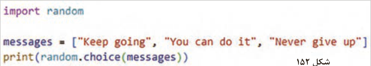
شکل 152
فعالیت
برنامهای بنویسید که:
یک عدد تصادفی بین ۱ تا 10 تولید کند. از کاربر بخواهد عدد را حدس بزند.اگر حدس درست بود، پیام شما موفق شدید چاپ کند؛ در غیر این صورت دوباره از کاربر ورودی بگیرد.ضمنًا تعداد دفعات تلاش کاربر را هم چاپ کند.
فعالیت
برنامهای بنویسید که شرایط زیر را داشته باشد:
چند کلمه ازپیشتعیینشده در برنامه وجود داشته باشد.
در هر بار اجرای برنامه، یکی از کلمات بهصورت تصادفی انتخاب شود.
تعداد دفعات مجاز برای حدسزدن، برابر با تعداد حروف کلمه انتخابشده باشد.
درصورتیکه کاربر کلمه را بهدرستی حدس بزند: کلمه نمایش داده شود و پیام تبریک مناسب نمایش داده شود.
در غیر این صورت: پیام پایان بازی نمایش داده شود.
روش دوم: وارد کردن بخشهای خاص (from ... import):
نام تابع import نام ماژول from در این روش، فقط توابع یا متغیرهای موردنیاز از یک ماژول وارد میشود. در این روش کد کوتاهتر و نوشتن سادهتر است.
مثال: فقط توابع sqrt و pow از ماژول math وارد برنامه میشوند (شکل153).
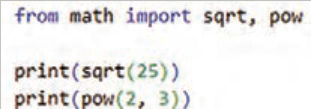
شکل 153
صفحه ۷۵
بعد از این دستور؛ نیازی به نوشتن math.sqrt نیست. مستقیمًا sqrt (25) نوشته میشود.
جدول5- ماژولهای پرکاربرد پایتون
ماژول
کاربرد
mathتوابع ریاضی randomتولید اعداد تصادفی turtleرسم شکل و گرافیک datetimeتاریخ و زمان osکار با سیستمعامل
مثال: نمایش تاریخ و زمان فعلی: در این مثال فقط تابع ()now مورد استفاده قرار گرفته است (شکل154).
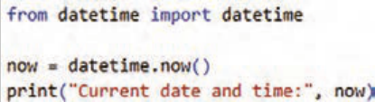
شکل 154
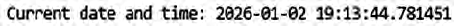
مثال: در این مثال، فقط نمایش ساعتِ زمان فعلی، نیاز است. بنابراین از روش دوم واردکردن ماژول استفاده شده است (شکل155).
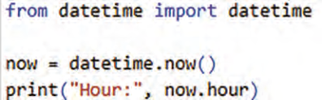
شکل 155
صفحه ۷۶
فعالیت
با استفاده از ماژول datetime برنامهای بنویسید که سال جاری را نمایش دهد.
فعالیت
(بازی حدس کلمه)، ماژولی بنویسید که:
یک کلمه مشخص داشته باشد. تعداد دفعات مجاز حدسزدن برابر با تعداد حروف کلمه باشد.
اگر کاربر کلمه را درست حدس زد: کلمه چاپ شود و پیام تبریک نمایش داده شود.
اگر کاربر در تعداد مجاز موفق نشد: پیام پایان بازی نمایش داده شود.
این ماژول را در برنامه اصلی استفاده کنید.
ماژول محلی (local):
ماژولهایی هستندکه توسط برنامهنویس نوشته شده است و در برنامه import میشوند.
ابتدا یک فایل پایتون با پسوند py ایجاد کنید. سپس توابع و متغیرها را در آن قرار دهید. سپس میتوانید آنها را با import در برنامه اصلی استفاده کنید.
مثال: فایل my_module.py را ایجاد کنید و در آن کدهای زیر را بنویسید (شکل156).
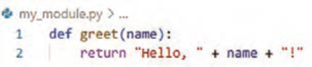
شکل 156
سپس در برنامه اصلی main.py این کدها را بنویسید (شکل157).
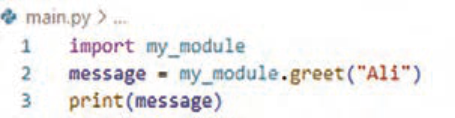
شکل 157
مثال: ابتدا یک فایل با نام math_module.py بسازید و توابع زیر را داخل آن بنویسید (شکل158).
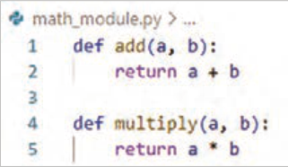
شکل 158
صفحه ۷۷
سپس در برنامه اصلی از آن استفاده کنید (شکل 159).
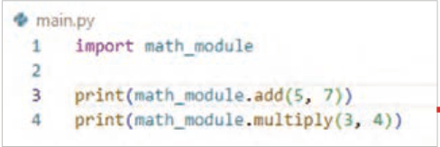
شکل 159
فعالیت
یک فایل با نام random_module.py بسازید و تابع زیر را داخل آن بنویسید:
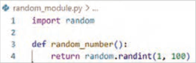
randint یک تابع آماده در ماژول random پایتون است که برای تولید عدد صحیح تصادفی در بازهای خاص استفاده میشود.
سپس در برنامه اصلی ماژول ساخته شده را import نموده از آن استفاده کنید.
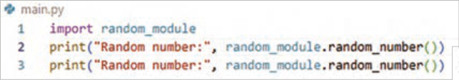
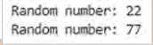
برنامه را اجرا و خطوط کد را توضیح دهید.
ماژولهای شخص ثالث (3rdparty): ماژولهایی که توسط دستور pipinstall نصب میشوند و در برنامه import میشوند. مثل Django ،Flask, PyGame و...
تفاوت تابع و متد
در مطالب قبل، از دستوراتی مانند ،split() append() و len() استفاده کردهاید، بدون آنکه تعریف رسمی آنها بیان شود.
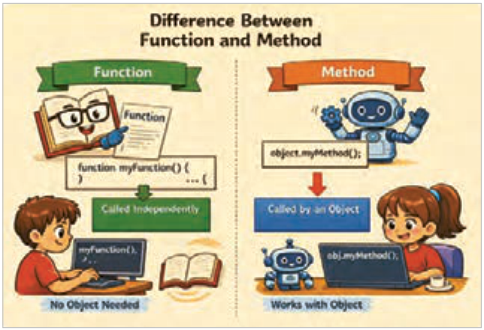
این موضوع کاملاً طبیعی است و در برنامهنویسی بسیار رایج است؛ زیرا بسیاری از مفاهیم ابتدا با استفاده عملی و سپس با تعریف دقیق معرفی میشوند.
شکل 160
صفحه ۷۸
تابع:(function) دستوری مستقل است که برای انجام یک کار مشخص به کار میرود و به نوع داده خاصی وابسته نیست.
مثال: شمردن تعداد کاربران: تابع len() تعداد کاراکترهای یک رشته را برمیگرداند (شکل161).
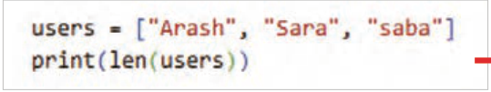
شکل 161
مثال: نمایش تعداد کاربران بهصورت رشتهای (شکل162):
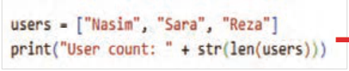
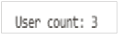
شکل 162
متد (Method): نوعی تابع است که به یک کلاس یا شیء مشخص تعلق دارد و برای انجام عملیات روی دادههای همان شیء استفاده میشود.
تفاوت اصلی تابع و متد در نحوۀ استفاده و وابستگی آنهاست؛ تابعها بهصورت مستقل فراخوانی میشوند، اما متدها از طریق یک شیء یا نوع داده و با استفاده از علامت نقطه (.) اجرا میشوند و معمولاً به دادههای داخلی آن شیء دسترسی دارند.
متد lower ,upper: با استفاده از متد lower ,upper میتوانید همه متن را به حروف بزرگ یا کوچک انگلیسی تبدیل کنید.
فعالیت
با راهنمایی هنرآموز محترم خطوط کد مقابل را توضیح دهید.
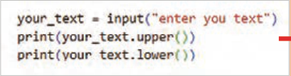
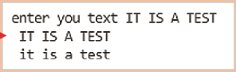
صفحه ۷۹
متد split رشته را به لیستی از کلمات تجزیه میکند (شکل163).
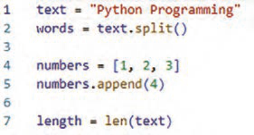
شکل 163
فعالیت
تابعی بنویسید که یکرشته را از ورودی دریافت کند و تعداد حروف بزرگ، کوچک و اعداد آن را نمایش دهد.
Page 74
Example: Build a list of motivational messages and, using the random module, print one random message on each run (Figure 152).
Run the program and check the result.
Figure 152
Activity
Write a program that:
Generates a random number between 1 and 10. Asks the user to guess the number. If the guess is correct, prints the message you succeeded; otherwise, asks the user for input again. Also print how many attempts the user made.
Activity
Write a program that meets the following conditions:
Several predetermined words exist in the program.
On each run of the program, one of the words is chosen at random.
The allowed number of guesses equals the number of letters in the chosen word.
If the user guesses the word correctly: the word is displayed and an appropriate congratulations message is shown.
Otherwise: a game-over message is displayed.
Second method: importing specific parts (from ... import):
from module name import function name In this method, only the needed functions or variables from a module are imported. In this method the code is shorter and easier to write.
Example: Only the sqrt and pow functions from the math module are imported into the program (Figure 153).
Figure 153
Page 75
After this statement, you do not need to write math.sqrt. You write sqrt (25) directly.
Table 5- Commonly used Python modules
Module
In practice
math mathematical functions random generating random numbers turtle drawing shapes and graphics datetime date and time os working with the operating system
Example: Displaying the current date and time: In this example only the now() function is used (Figure 154).
Figure 154
Example: In this example, only displaying the hour of the current time is needed. Therefore the second method of importing a module is used (Figure 155).
Figure 155
Page 76
Activity
Using the datetime module, write a program that displays the current year.
Activity
(Word-guessing game), write a module that:
Has a specific word. The allowed number of guesses equals the number of letters in the word.
If the user guesses the word correctly: the word is printed and a congratulations message is displayed.
If the user does not succeed within the allowed number of attempts: a game-over message is displayed.
Use this module in the main program.
Local module (local):
These are modules written by the programmer and imported into the program.
First create a Python file with the py extension. Then place functions and variables in it. Then you can import them in the main program.
Example: Create the file my_module.py and write the following code in it (Figure 156).
Figure 156
Then in the main program main.py write this code (Figure 157).
Figure 157
Example: First create a file named math_module.py and write the following functions inside it (Figure 158).
Figure 158
Page 77
Then use it in the main program (Figure 159).
Figure 159
Activity
Create a file named random_module.py and write the following function inside it:
randint is a ready-made function in Python’s random module that is used to generate a random integer in a specific range.
Then in the main program import the module you created and use it.
Run the program and explain the lines of code.
Third-party modules (3rdparty): Modules that are installed with the pipinstall command and are imported into the program. For example Django ,Flask, PyGame, and so on.
Difference between a function and a method
In earlier material, you used statements such as ,split() append() and len() without a formal definition of them being given.
This is completely natural and very common in programming; many concepts are first introduced through practical use and then with a precise definition.
Figure 160
Page 78
Function:(function) An independent statement used to perform a specific task and not tied to a particular data type.
Example: Counting the number of users: The len() function returns the number of characters in a string (Figure 161).
Figure 161
Example: Displaying the number of users as a string (Figure 162):
Figure 162
Method (Method): A kind of function that belongs to a specific class or object and is used to perform operations on that object’s data.
The main difference between a function and a method is how they are used and what they depend on; functions are called independently, but methods are run through an object or data type using the dot (.) operator and usually have access to that object’s internal data.
The lower ,upper: methods: Using the lower ,upper methods, you can convert all of the text to uppercase or lowercase English letters.
Activity
With guidance from your instructor, explain the lines of code opposite.
Page 79
The split method breaks a string into a list of words (Figure 163).
Figure 163
Activity
Write a function that receives a string from input and displays the count of its uppercase letters, lowercase letters, and digits.